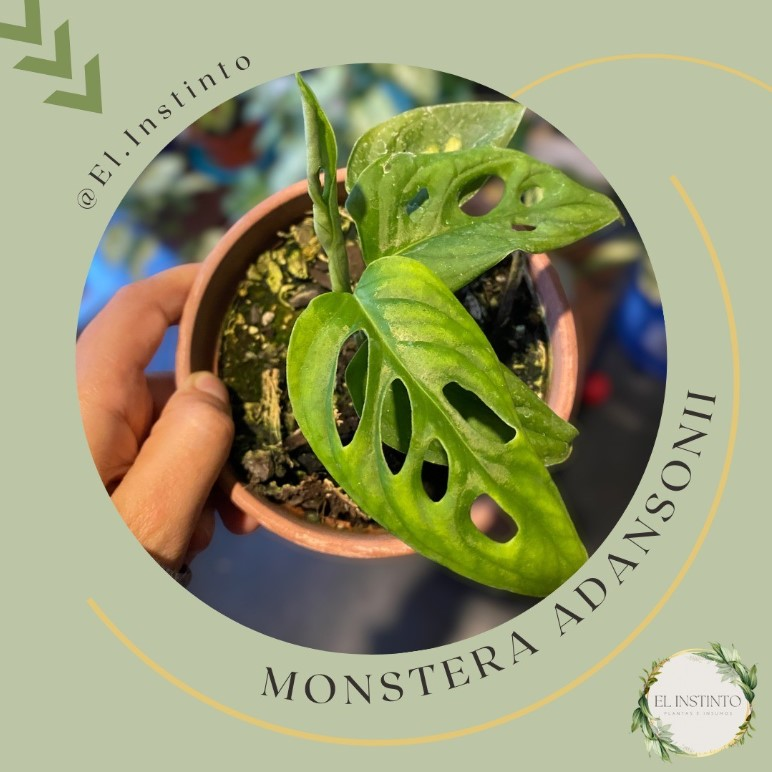
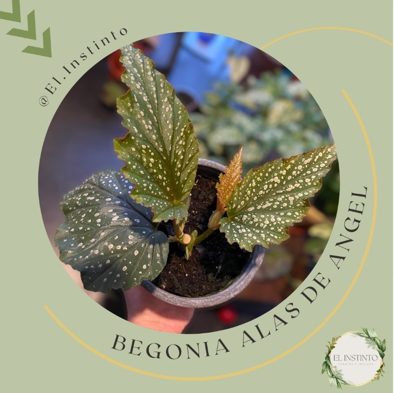
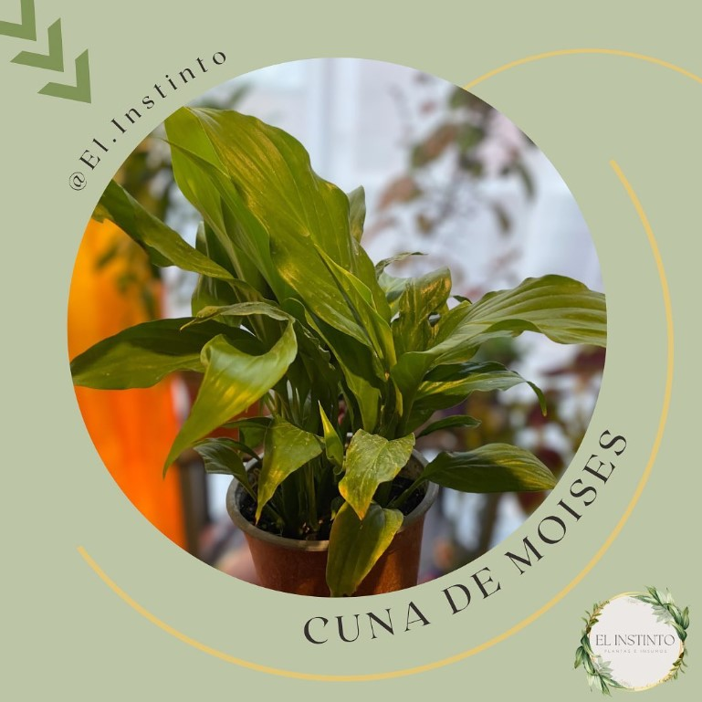

Plantas decorativas e insumos
|  |
Monstera AdansoniLa Monstera adansonii es una planta de interior popular conocida por sus hojas verdes y perforadas en forma de corazón. Es una planta fácil de cuidar que prospera en lugares con luz indirecta y humedad moderada. Prefiere un sustrato bien drenado y debe regarse cuando la capa superior del sustrato está seca al tacto. |
Precio $8.000 |
|  |
Begonia Alas de AngelLa Begonia Alas de Ángel es una planta de interior popular con hojas asimétricas y brillantes. Es fácil de cuidar y puede tolerar una amplia gama de condiciones ambientales. Se propaga fácilmente a través de esquejes y es resistente a enfermedades y plagas comunes |
Precio $3.500 |
|  |
Cuna de moisesEl spathiphyllum, también conocido como Cuna de Moises, es una planta de interior y fácil de cuidar. Originaria de las selvas tropicales de América Central y del Sur. Se adapta bien a los ambientes interiores y es una excelente opción para purificar el aire. |
Precio $7.000 |